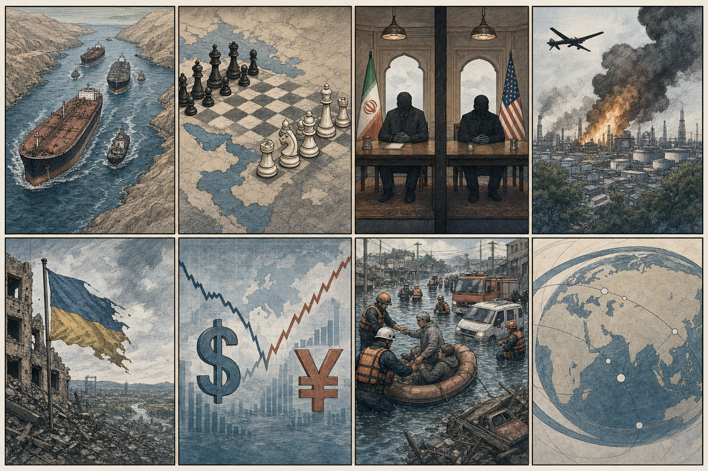
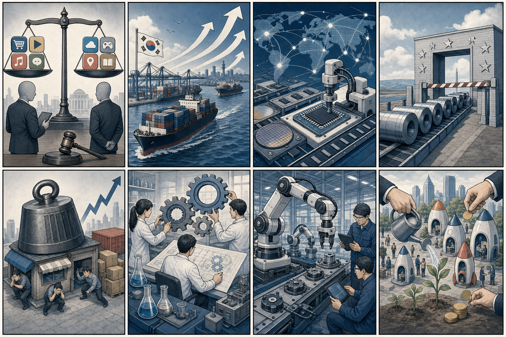

SK하이닉스 000660.KS
테마: AI 메모리/HBM
연결 이유: 미국 빅테크의 AI 서버 투자가 계속되면 고대역폭 메모리 수요가 국내 HBM 대표주로 이어질 수 있습니다.
체크포인트: 엔비디아·마이크론 뉴스, 외국인 수급, HBM 가격 코멘트
단순 제목 나열이 아니라, 각 뉴스의 배경·핵심 사실·예상여파를 한 번에 읽히도록 다시 구성했습니다.
7월 1일 아침 기준으로 미국 시장은 AI 인프라와 반도체 기대가 지수 상승을 견인하는 가운데, 중동 리스크와 달러 강세가 동시에 작동하는 국면입니다. 단기적으로는 지수 방향보다 “AI 수요가 한국 반도체·전력·방산·원자재 관련주에 어떻게 연결되는지”가 더 중요합니다.
테마: AI 메모리/HBM
연결 이유: 미국 빅테크의 AI 서버 투자가 계속되면 고대역폭 메모리 수요가 국내 HBM 대표주로 이어질 수 있습니다.
체크포인트: 엔비디아·마이크론 뉴스, 외국인 수급, HBM 가격 코멘트
테마: 중동·유럽 안보/방산
연결 이유: 이란·호르무즈 긴장과 우크라이나 전쟁 장기화는 방산·항공우주 밸류체인 관심으로 연결될 수 있습니다.
체크포인트: 방산 수주 공시, 나토·중동 안보 뉴스, 방산 ETF 수급
테마: 원자재/환율/비철금속
연결 이유: 달러 강세, 엔화 약세, 유가와 금 가격 변동은 비철금속·원자재 기업의 실적 기대와 비용 구조에 영향을 줍니다.
체크포인트: 달러지수, 아연·니켈 가격, 원/달러 환율
내용요약 이란은 미국 측 특사와 직접 회동하지 않겠다는 입장을 유지하면서도, 카타르 등 중재자를 통한 간접 대화 가능성은 열어두고 있습니다. 이는 양측 모두 확전은 피하려 하지만, 핵·제재·안보 의제에서 신뢰가 낮아 협상 속도가 느릴 수 있다는 의미입니다.
예상여파 유가, 해운·정유주, 방산주, 원/달러 환율이 함께 움직일 수 있습니다. 한국 기업 입장에서는 에너지 조달비와 물류비 리스크를 단기 변수로 봐야 합니다.
내용요약 AP는 이란 국영TV 보도를 인용해 호르무즈 해협에서 선박이 좌초됐다고 전했습니다. 호르무즈 해협은 세계 원유·LNG 물동량의 핵심 통로이기 때문에, 실제 공급 차질이 크지 않아도 시장은 민감하게 반응합니다.
예상여파 정유·해운·항공·물류 업종에는 비용 부담이 커질 수 있고, 에너지 수입국인 한국에는 환율과 물가 부담으로 이어질 수 있습니다. 보험료와 운임 추이를 같이 봐야 합니다.
내용요약 우크라이나가 러시아 정유시설을 다시 공격했다는 보도가 나왔습니다. 단순 전선 교전이 아니라 연료 생산·수송망을 겨냥하는 방식으로 전쟁 비용을 키우는 전략입니다.
예상여파 러시아 내 연료 부족과 수출 차질 우려가 커지면 유럽 에너지 가격, 해운, 곡물 운송비에도 영향을 줄 수 있습니다. 방산·에너지·원자재 관련 뉴스의 동시 확인이 필요합니다.

주제: 호르무즈 해협, 이란-미국 협상, 우크라이나 에너지 인프라전, 글로벌 시장 변동성
내용요약 공정거래위원회가 구글의 게임앱 관련 불공정행위 혐의에 대해 제재 절차에 들어갔습니다. 앱마켓 지배력을 이용해 경쟁을 제한했는지, 게임사와 결제·유통 구조에 어떤 영향을 줬는지가 핵심입니다.
예상여파 국내 앱 개발사와 게임사는 인앱결제, 수수료, 마케팅 비용 구조 변화를 기대할 수 있습니다. 반대로 플랫폼 정책이 바뀌면 앱 운영·결제 UX도 조정해야 할 수 있습니다.
내용요약 한국 수출이 월간 기준 처음으로 1,000억 달러를 넘어섰고, 반도체 호조가 전체 수출을 강하게 끌어올렸습니다. IT·자동차가 뒤를 받치며 한국의 글로벌 수출 순위 상승 가능성도 거론됩니다.
예상여파 반도체 장비·소재, 전력 인프라, 물류, 환율 민감 업종에 긍정적입니다. 다만 수출 호조에도 환율이 높은 만큼 원가와 외화부채 부담을 함께 봐야 합니다.
내용요약 EU 철강 수입 쿼터 조정 과정에서 한국이 사실상 최혜국 대우를 받은 것으로 전해졌습니다. 무관세 물량 축소 폭을 최소화했다는 점에서 국내 철강업계는 유럽향 수출 불확실성이 줄었다고 평가합니다.
예상여파 철강뿐 아니라 자동차·조선·기계 등 유럽 수출 밸류체인의 원가와 공급 안정성에도 영향을 줄 수 있습니다. 보호무역 기조가 이어지는 만큼 품목별 후속 협상이 중요합니다.
내용요약 정부와 산업계가 로봇, 제조 자동화, 자율주행, 스마트팩토리를 묶은 피지컬 AI 경쟁력 확보를 전면에 내세웠습니다. 생성형 AI를 넘어 실제 현장에서 움직이고 판단하는 AI가 다음 경쟁축이라는 메시지입니다.
예상여파 로봇 부품, 센서, 엣지AI, 제조 데이터, 디지털트윈 기업에 정책·투자 기회가 생길 수 있습니다. 앱·SaaS 기업도 현장 업무 자동화 솔루션으로 확장할 여지가 있습니다.

주제: 구글 앱마켓 제재, 수출 1,000억 달러, EU 철강 쿼터, 고환율, 피지컬 AI